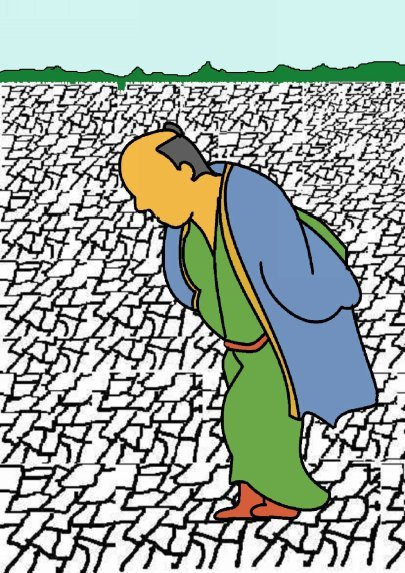
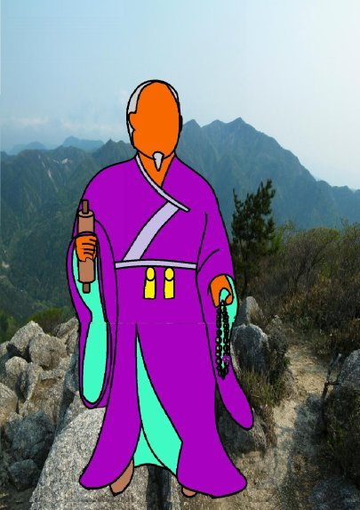
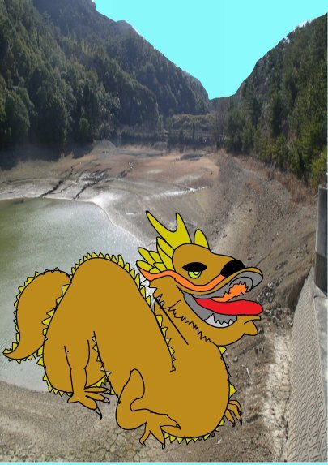
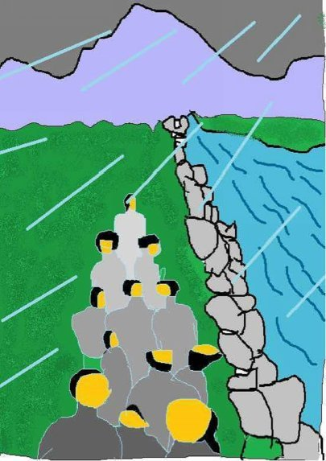
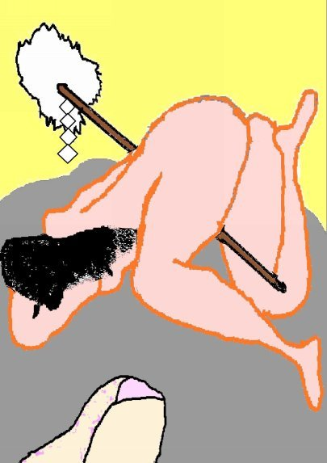
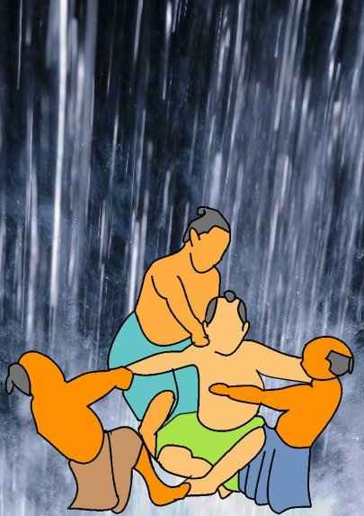
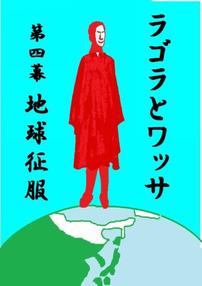

| ⑮犠（いけにえ） | |
| 深川龍 | |
| UNKNOWN (2016) | |
第十五話
こわい話がお嫌いな方はお読みにならぬ方がよろしかろう。人身御供の話じゃによって。
昭和の終わり頃まで三重県三重郡菰野町大字竹成字野中と言うところに翁溜と言うのがあった。
溜田子の年番だった二人の男が溜の周囲を歩いておった。一人は胡麻塩頭じゃったから四十五、六じゃろうか。もう一人は二十過ぎのニキビ面じゃった。
「春先から雨が多て田植えの水には事欠かなんだが、田植えを終わるとどうじゃ。一滴の水も降らん。片照りと

はこのことじゃのう。」
「俺らの田んぼは砂地じゃでの。もう、稲草はしおっとなって枯れそうじゃ。」
「どこも同じことよ。何んぞ、お天道さまの気に入らんことでもあったんじゃろうか。」
溜の周囲の小高い堤は草がちりぢりに撚れて枯れたようになり、いつもより一層高こうなったようで溜の中まで良う見えた。水はすり鉢形をした溜の真ん中に少し残っておるだけじゃった。その水たまりの中で鮒や泥鰌が泥んこになってぐじゃぐじゃ動いておった。水たまりの周囲には野鳥の足跡が無数に付いておった。
「このままでは飢饉になるかも知れん。」
「苦労して植えて、田の草まで取ったのに切ないことじゃ。」
地面は真っ白に乾いて二人が歩く度に足元から砂埃がたった。
どこから来たのか分からなんだが少し禿げた頭の白いちょび髭を生やした翁が堤の中程に立っておった。
「これこれ、お若いの、そうも草履を引きずらんで歩きなされ。砂埃がたつではないか。」
「爺さんがおまえに何か云うとるぞ。」
ニキビ面の男が翁の言葉に喰ってかかった。
「何じゃ、爺い。勝手に俺らたちの溜に来やがって。つ

べこべご託を並べるんじゃねえ。」
数日前から一人の翁が堤に小屋掛けしておるとは聞いておったが、二人がこの翁に出会うたのは初めてじゃった。
「数日前に、この溜に龍神様がござってのう。わしはその時にお供をしてきたのじゃ。今は休んでおられるが、もし目を覚まされた時、龍神様のお目玉に砂埃でも入ったらどうする。さぞかしお怒りになるじゃろう。」
「勿体ぶって云うな。この溜には龍神様が住んでござるじゃと。それじゃ、雨でも降らせて貰おうじゃないか。」
「これこれ、物には道理と云うものがある。龍神様に降雨をお願い申すのならお供えをして祈祷するのじゃ。」
ニキビ面は尚も悪態を吐いた。
「爺い、そのお供えを盗んで食おうと思うておるのじゃろう。」
さすがに胡麻塩頭は聞くに堪えられなんだのか、ニキビ面の男の着物を後ろから引っ張った。
「何じゃい、この爺さんの肩を持つ気か。」
「まあまあ、そうもかんかんするな。ところで爺さん、龍神様に雨乞いをすると本当に雨が降るのじゃろうか。」
「さよう、先ずは祭祀を調えられよ。わしが舞を舞って進ぜよう。」
ニキビ面の男が胡麻塩頭を押し退けて、また前へ出た。
「よぼよぼ爺が舞を舞うじゃと。碌に腰も立たん老いぼれが。」
「若造、言葉は謹みて使うものじゃぞ。」
翁はすっと小屋に隠れた。二人は翁の云うことなど気にせずになおも堤を歩いた。
「おい、何だか俺らたちのおる堤が動いたような気がした。」
胡麻塩頭がそう言った時、激しい揺れがおそった。
「これは地震じゃ。雨は降らんし、天変地異の前触れかも知れん。」
あまりの揺れに二人は慌てて溜の堤から駈け下りた。二人は堤の下の道で近所の農婦に出会った。
「えらい地震じゃったのう。」
「何を言わしゃる。ちっとも地震など無かったのに。」
自分たち二人はあんなに怖ろしい地震に遭ったのに誰も知らぬとは不思議なことがあるもんじゃと思うた。地震があったと云うてくれたのは巫女さんだけじゃった。
「あの地震は鯰が動いたのでは無うて、蛇が動いたのじゃ。」
昔はどこの地方にも巫女さんと呼ばれて占いや口寄せなどをする女が住んでおったものじゃ。巫女さんは霊力を持つ者として畏怖されておった。

「蛇じゃと。」
ニキビ面の男は何かと他人に喰ってかかる質じゃった。
「龍神と云うた方がええかも知れん。蛇が郷で千年、山で千年、海で千年過ごすと天に昇って龍になると云う。龍潜と云うのは龍がまだ天に昇らないで水中に蛇の姿で居ることを云うのじゃ。」
「では、その龍潜が俺らたちの溜におるとでも云うのか。」
ニキビ面の男は突っかかるような口調になった。一緒におる胡麻塩頭は取り成しをせねばならなんだ。
「巫女さんの云われることじゃ。間違いは無かろう。」
巫女はもうニキビ面など相手にせず、胡麻塩頭の方にのみ話しかけた。
「この日照りを収めるには溜の龍神を祀らっしゃるが良かろう。龍になる前の蛇は往々にして翁の形で現れるそうじゃでのう。」
「ではあの爺さまが蛇の精じゃと云われるか。」
「おそらくはそうじゃろう。」
溜田子の年番じゃった二人は早速、田子の衆を集めて寄り合いを開いた。
先ず、胡麻塩頭が口を開いた。
「ずっと溜をまわったが、もう溜に水はない。水源も見に行ったがかれてしもうて水が湧かん、これ以上溝掘りをしても何の効き目もなかろう。」
胡麻塩頭が言い終わる前にニキビ面の男が口出しをした。
「雨乞いの祈祷じゃ。」
突拍子も無いニキビ面の男の言葉じゃったが、田子の衆とて他に思いつくようなことは無かった。
そこで巫女さんに細かい手筈を教えて貰い祭祀を執り行うことになったのじゃ。
朝早くから田子の衆は溜の堤に集まった。そして、酒やら塩やら饅頭やら色んなお供えをしたもんじゃ。
神主さんたちの奏でる簫や篳篥、太鼓の音が溜の堤から流れ始めた。数日前から堤に小屋掛けしておった翁が現れた。
「天上の大神様に舞を奉納申します。何とぞ雨をお恵み下され。」
いつの間にか白い装束に着替えた翁は舞い始めたのじゃった。
するとどうじゃ。東の空から天空に向かって糸を引くような竜巻が現れたのじゃった。ぽつりぽつりと雨粒が落ち始めた。そして、激しく降り始めたのじゃった。田子の衆が家に帰り着く頃には土砂降りで道も田んぼも分
 からん程になった。
溜池の堤が崩れ始め、中から黒龍が姿を現すのを見たと言う者もおった。舞っておった翁は龍にまたがると、そのまま天空に上っていったそうじゃ。その後、この溜池をだれ云うと無く翁溜とよんだ。
ニキビ面の男は雨乞いの祈祷は自分が云いだした事じゃと、そりゃあ自慢したもんじゃった。
あれほど日照りが続いたというのに、今度は一度降り始めると止むことを知らなんだ。古来、雨乞いという祈祷はあるが、晴れ乞いと云う祈祷は聞いたことがない。まあ、照る照る坊主をつくって窓辺に吊すぐらいじゃった。
かんかんかーん、かんかんかーんと半鐘を叩く早鐘の音が聞こえた。蓑笠着けた若い衆が大声をだして走った。
「おーい、砂濾の堤防が切れたぞ。」
砂濾はスゴシと読んで普段、三重県三重郡菰野町を流れる朝明川は地下に伏流水が流れていて地上の広い川原にはほとんど水が流れていない。しかし、大雨が降ると激流となる。
川は上流から土砂を運んでくるので長年月の間に川底が高くなる。その度に堤防の石組みを高くする。やがて川底の方が周囲の平地より高くなる。いわゆる天井川になるのじゃ。天井川は一度堤防が切れると、濁流が一気に平地を目指して押し寄せる。濁流は田畑も家も呑み込んで行くんじゃ。
「叺や俵に土砂を詰めて砂濾の堤防に運んでくれ。」
どこでも一家に一台は大八車があった時代じゃった。土砂を詰めた叺や俵を運ぶ大八車の長い列が土砂降りの中で墨絵のように見えた。
砂濾の堤防では村長が差配して若い衆たちに運び込まれた土砂入りの叺や俵を投げ入れさせておった。
ところが決壊したところを堰き止めるのは容易なことではない。叺や俵は勿論のこと、丸太や大きな石もどんどん投げ入れたが投げ入れても投げ入れても流されるだけじゃった。
村長は投げ入れるのを止めさせた。
「このままではいくら投げ入れても無駄じゃ。誰か良い智慧はないか。」
例のニキビ面の男が進み出た。
「村長さんよ。これは龍神さんの亜多んじゃ。折角、俺らが言い出して雨を降らせて貰ろたのに何のお礼もしておらんじゃろう。」
男は先の干魃に雨乞いを提案して雨を降らせたのは自分の手柄じゃと思うておった。じゃが、誰もがこの手柄をちゃんと認めておらぬとも思っておったのじゃった。
「おお、龍神さんに雨乞いをするように言い出したのはおまえじゃった。今度はまた何ぞ良い勘考でもあるか。」
「今度は雨がおさまるように龍神さんへ生贄を捧げてはどうじゃ。」
「何を生贄にするんじゃ。」
「昔から堤防工事には人柱としたもんじゃ。」
「何じゃと、今の世に人柱などと。」
「このままでは田畑も家も全部流される。」
男は今度こそ、村長が自分の提案を手柄として認めるじゃろうと思うた。
「では誰を人柱にするんじゃ。」
村長は困った顔をして皆の衆をみまわした。皆の衆は自分が目立たぬようにと急に静かになった。人柱に選ばれるということは生きたまま水底に沈められるということじゃった。
「誰ぞ、村のために命を捧げてくれる者はおらんか。」
例の男は得意げに大きな声を出した。
「籤じゃ。籤に当たった者が人柱になる。」
皆の衆はしぃーんとなってしもうた。籤引きで自分があたってしもうたらどうしようかと思うたのじゃ。
「籤か、誰に当たるか分からん。皆の衆、それでも良かな。」
激しい雨が菅笠を貫いて霧のように顔にかかり、蓑の中までしみ通っておったが誰も彼も石像のようになっておった。じゃが、後ろの方におった年輩の男がおもむろに喋りだした。
「此間、龍神さんにお願いしたときは巫女さんに占のうてもろた。やっぱ、どうすれば良か巫女さんに占のうて貰ろうたらどうや。人柱っちゅうのはちょっと置いといて。」
例の男はその年輩の男を振り向いて睨んだ。じゃが村長はほっとするように年輩の男に頷いた。
「なるほど、それも道理や。だれか巫女さんを呼んでこい。」
例のニキビ面の男は不服そうな表情になっておった。
「この土砂降りの中をかな。」
「雨は激しゅうなるばかりや。そんなことは言うておれん。すぐに来てもらえ。」
村長の言うことじゃったから仕方がない。体の大きな若者を選んで巫女さんを呼びに行かせたんじゃった。若者はすぐに蛇の目傘を差して巫女さんを背負ってやって来た。
「えらい雨の中、無理を言うたな。このままでは作物が全部流れて飢饉になっるやも知れん。そしたら多くの村人が死ぬことになる。此間の日照りの時は龍神さんにお願いして助けて貰ろた。巫女さん、今度はどうしたら良かろうかのう。」
「道々若い衆に聞いたがやっぱり人柱をたてることじゃ。さすれば、龍神様の溜飲も下りて雨も止むじゃろう。」
「しかし、村人の誰かが犠牲になる。誰も死ななくて良い方法はないものかのう。」
「一人が人柱になればたくさんの田畑や家が助かり、村人が飢饉で餓死することもなくなる。先ずは人柱じゃ。」
「籤で決めるという手も出ておるが、それでは効き目がないかも知れん。どうせ生贄にするなら龍神さんに喜んでもらえる者が良じゃろう。誰を人柱にすれば良か、此処で巫女さんに占うてもらおやないか。皆の衆、どうじゃ。」
皆の衆は再びしぃーんとなってしもうた。しかし、今度は巫女さんが占って決めるのじゃ。誰も文句の言いようがなかった。
巫女さんは蛇の目傘を振り払うと大きな菰野石の上にぺたっと座り込んだ。首から下げた長い数珠を両の手で揉みながら腕と言わず、顔面と言わず体全体を菰野石の鬼面にぶつけた。激しい雨に濡れて体に纏いついた白い法衣が朱にそまった。
「あぁ、うぅっ。」
皆の衆の視線は大きな菰野石の上で七転八倒する巫女さんに釘付けになった。体に纏いついておった巫女さんの法衣は激しい動きではだけ、長い黒髪が白い肌の上に張りついておった。
やや暫し、巫女さんはぐったりして大きな菰野石の上に俯した。激しい雨足に人々は黙り、木々だけがざざー、ざざーと悲鳴を上げておった。
巫女さんが突然立ち上がった。纏っておった白い法衣は脱げ落ちて全裸になっておった。濡れて光った巫女さんの妖艶な裸体がすーっと例のニキビ面の男の前に移動

した。
「そなたじゃ。龍神様が生贄としてお召しになるのは。」
男は大きな目玉を剥いて巫女さんを見た。
「何で俺らが。」
激しい雨に一刻の猶予もできなかった。誰かが後ろからニキビ面の男に縄をかけた。ニキビ面の男は大声を出して抵抗したが、皆で寄ってたかって人柱にしてしまったんじゃ。そしたら雨が止んだそうじゃ。
三重県の治水工事がなされるまでは大雨が降ると砂濾の辺りでは男の叫び声にも似た囂々と云う音が聞こえたもんじゃった。治水工事で朝明川の音が聞こえなくなるまでは村の衆は決して男のことを忘れなかった。勿論、

畏怖と感謝の気持ちからじゃった。
(完）
深川龍の
ラゴラとワッサ⑤第四幕
もおよみください。

- 1 -